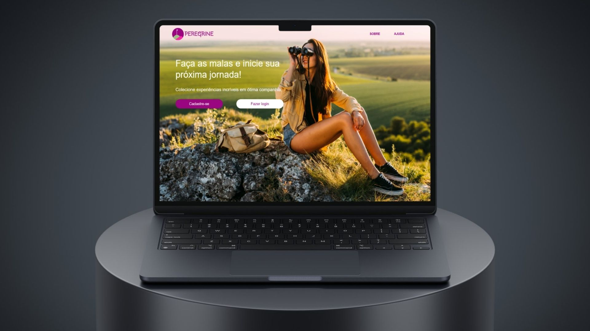
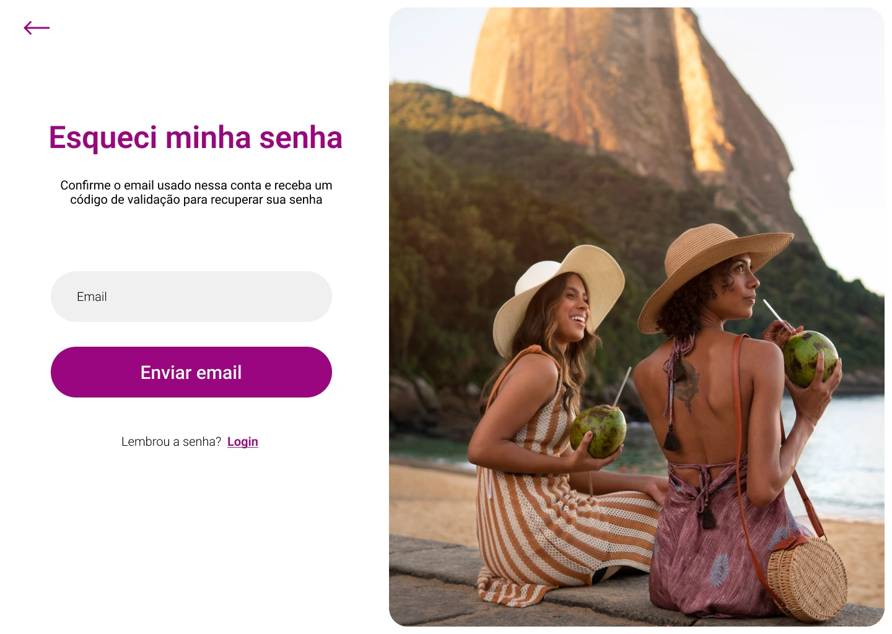
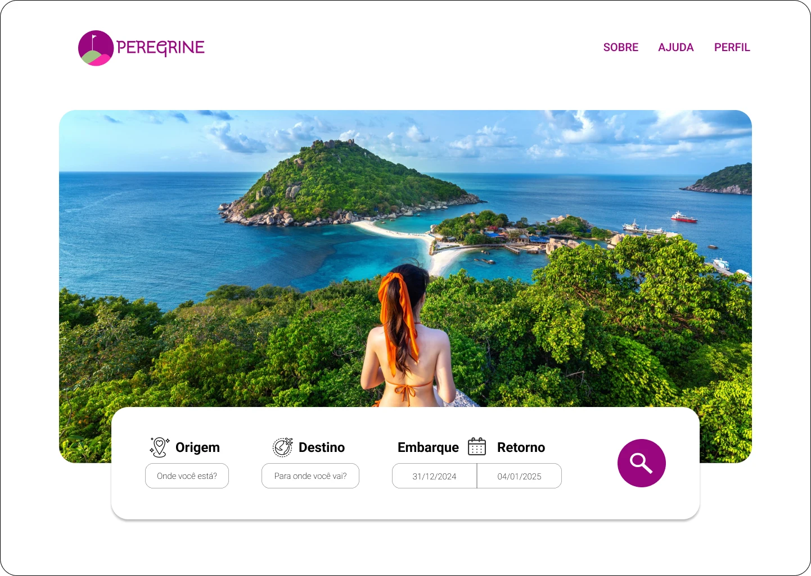
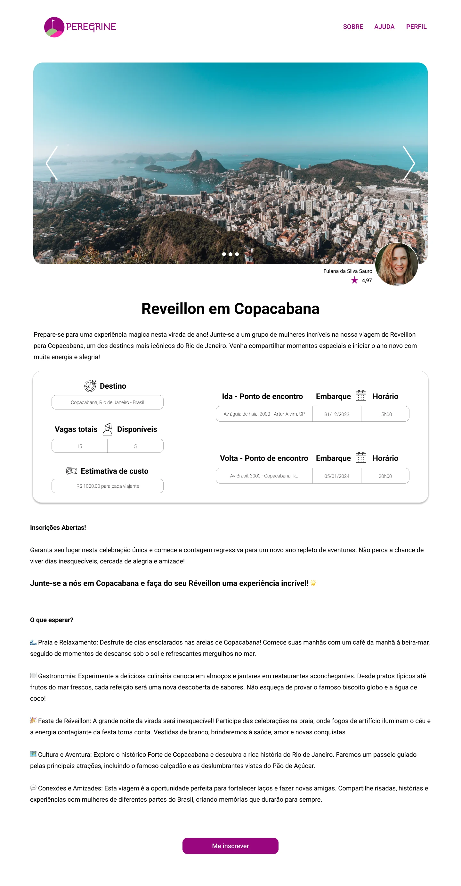
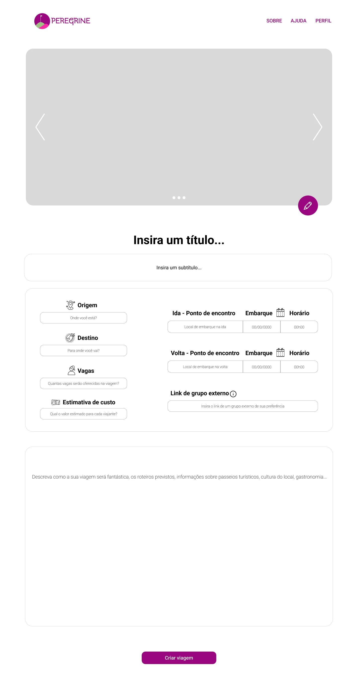
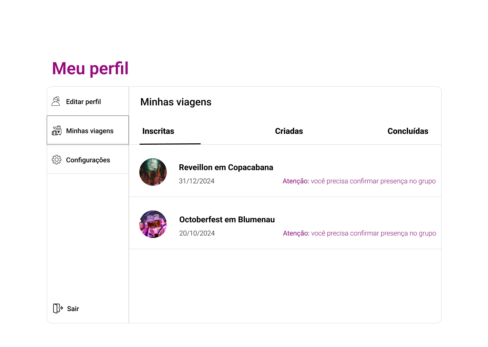

Aplicação web · Viagens
Peregrine
Planejamento de viagens para mulheres que querem viajar com outras mulheres.

O projeto
O Peregrine reúne planejamento, divulgação e busca de viagens. A proposta permite que mulheres organizem roteiros e encontrem outras viajantes para participar, com etapas de cadastro, validação de perfil e administração.
Proposta e estrutura
O backend em JavaScript utiliza Node.js e Express. Os templates Handlebars renderizam as páginas, e a camada de dados utiliza MySQL com Sequelize. A interface inclui busca, detalhes e gerenciamento de viagens, além dos fluxos de acesso.
Backend, banco de dados & Scrum
Minha participação
- Trabalhei na estruturação do banco relacional e na integração dos dados com o backend.
- Participei dos fluxos de login, validação e das operações de consulta e atualização de informações.
- Implementei e ajustei fluxos de viagens, incluindo pesquisa, detalhes, exibição de dados e integração das páginas Handlebars.
- Ajudei a estabelecer uma padronização de commits para tornar as alterações mais fáceis de acompanhar.
Scrum e colaboração
Atuei como Scrum Master na organização do trabalho: estruturação do backlog, planejamento de sprints conforme os prazos da faculdade, divisão de tarefas e acompanhamento das entregas. Facilitei reuniões, alinhamentos e resolução de conflitos, além de apoiar a definição de requisitos e a documentação.
O que essa experiência acrescentou
Aprofundei a modelagem e a integração entre banco, lógica de negócio e páginas dinâmicas. Também consolidei a organização de requisitos funcionais e não funcionais, diagramas e entregas por sprint.
Tecnologias
Na minha atuação
No projeto completo
O projeto em telas
Registros da aplicação desenvolvida pela equipe. As imagens mostram o produto completo; minha contribuição está descrita na seção acima.











Explore o projeto
Repositórios da organização Best-of-the-class com os arquivos e a documentação do projeto.